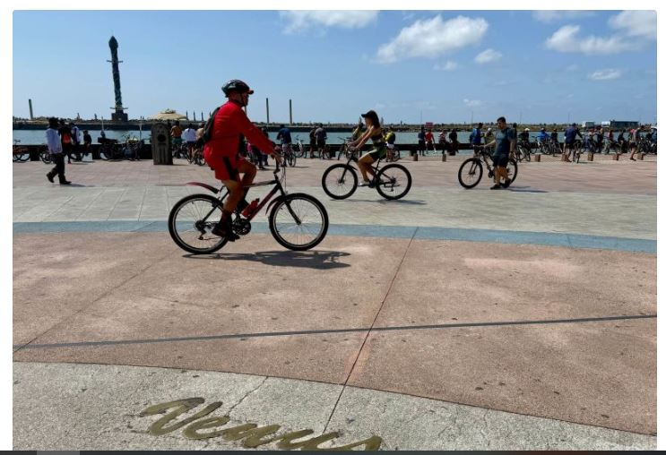
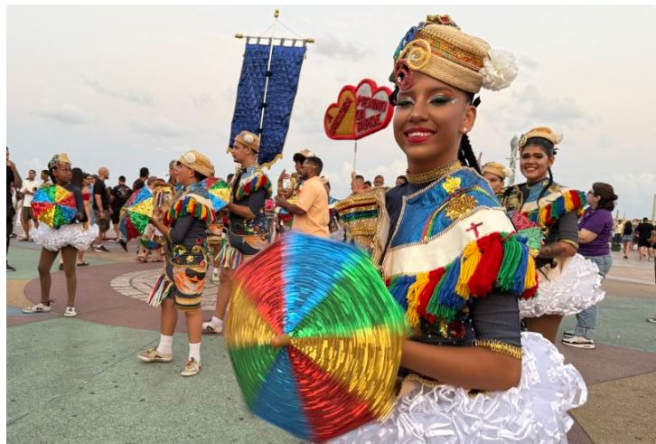

Marco Zero de Recife
O Marco Zero de Recife é o grande cartão-postal da capital pernambucana. Localizado no Recife Antigo, é um ponto de encontro para moradores e importante atração turística, cercado por prédios históricos, museus, lancherias e mercado de artesanatos, e é de onde saem os barquinhos para o Parque de Esculturas Francisco Brennand ou porpulamente conhecida como a "bilola gigante".

Marco Zero de Recife: o que você precisa saber
Tecnicamente, o Marco Zero é o ponto de partida para medir as distâncias para todas as terras pernambucanas. É o que está escrito no círculo de bronze colocado centro, junto com os dados de latitude e longitude.
Ao redor, foi desenhada uma grande rosa dos ventos, com os nomes de astros do Sistema Solar, além dos pontos cardeais. É uma obra confeccionada com pedras de quartzo e granito pelo artista plástico pernambucano Cícero Dias.
Ela não é apenas um marco visual, mas também um símbolo poético que reforça a ideia do Recife como ponto de origem, encontro e abertura para o mundo.

Mas os moradores também se apropriam demais desse local, como um ponto de encontro para realizar ou terminar eventos. Muitas famílias vão para lá passear com as crianças, levando bikes e patinetes, uma vez que o Marco Zero se interliga ao calçadão da orla do antigo porto.

Carnaval fora de epoca e movimento
domingos são bem movimentados no Recife Antigo —, encontrei um enorme grupo de ciclistas pela manhã, que usaram o Marco Zero como ponto de chegada, e, ao entardecer, é onde terminava um bloco de carnaval fora de época, com direito a apresentação de frevo e bonecos gigantes. Foi incrível!

O que fazer junto ao Marco Zero
Além de tirar a tradicional e já referida fotinho sobre a Rosa dos Ventos, tem várias atrações turísticas que rodeiam o Marco Zero. Centro de Artesanato de Pernambuco: é considerado um dos maiores centros de artesanato do Brasil e conta com uma vista gostosa para o estuário do porto. Tem peças em pedra, argila, madeira de alto padrão, mas também dá para garimpar lembrancinhas e até roupas de designeres locais.
Parque de Esculturas Francisco Brennand: ou porpulamente chamado pelo pernambucano de bilola gigante
Parque de Esculturas Francisco Brennand: É um complexo de esculturas do famoso artista pernambucano, instalado sobre o molhe de arrecife. Dá para vê-lo, a 200 metros de distância, ou pegar um barquinho para acessá-lo, logo abaixo do Marco Zero.